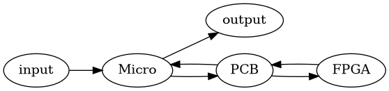
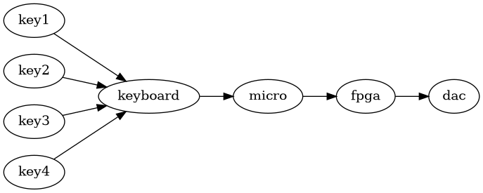

Folk
Amund
- 4 året data
- digdat, maskinnær, komptek
- java
Rikke
- litt erfaring med lowlevel embedded
- litt scala, c , asm
Eilif
- året data
- hatt digdat
- maskinnær
- c++
- python
Petter
- informatikk 4,
- Går database
- datadig, mikrokontrollere
- c java c#
Peder
- data
- python, c++, c, jobbet på ARM
- har fiklet med lyd
Robert
- data
- komptekt, maskinnær
- scala i jobb
Rikard
- data
- komptekt, digdat, etc
- python, litt c
Karl
- 4’de året data
- security
- c++ python, liker ikke scala
- hobbyelektronikk som arduino og liknende
- liker lodding
oversikt
PCB
- printed circuit board
- kicad
- designes først
- trenger ikke mye funksjonalitet
Vi må interagere mellom konmponentene. For dette er PCB bread and butter
FPGA
- field programmable gate array
- chisel
- arbitrær logikk
Mikronontrolleren
- Kraftig
- gecko
- ingen os
- kjører i C eller ASM nivå
- vanskelig med parallelle jobber grunnet mangel av os
- inget filsystem
- MIDI?
- standard for å formidle noter og instrument data
Output
- Analog signal
- Vi burde kjøpe en DAC
Lydbølger
- Polytonekrav
- bølger kan adderes
Amund vil at alle er enige om hva MVP er
- 4-7 knapper
- addering av bølger på fpga
- kansje treig og teit
Folk samtykker i stillhet
Amund vil at alle bidrar likt, men er klar over at noen aspirerende genier vil gjøre mere.
Forventinger
Tegnet av Amund:

- Vi trenger trolig en DAC, eller vi kan går får å gjøre PWM på FPGA hvis vi vil ha det morsomt
- Mikrokontrolleren har 32 registere.
- Vi trenger kansje RAM, ikke ROM
- Dette følger med enkelte modeller av EFM-32
- vi må bestemme hvilke komponenter vi vil ha
- giant gecko har 1000kb mer flash memory og 128kb med RAM
Thought process:

Actual:

red edge: backup on PCB in case of pivot
Kommunikasjon
Slack, Github Org
(plz install the Slack app)
Lederrolle
- Tar imot meldinger fra folk
- Snakke med professor
- Ta imot og gi kjeft
Hvem er den heldige: AMUND
Gruppekontrakt
- Straff for å ikke dukke opp og ikke gi grunn på standup: kakestraff
- annen/mer straff kan eventuelt introduseres etter behov
- Akademisk kvarter
- møte onsdag kl 16-18
- Avgjørelser: konsensus etterfulgt av avstemning ved behov (majority rule)